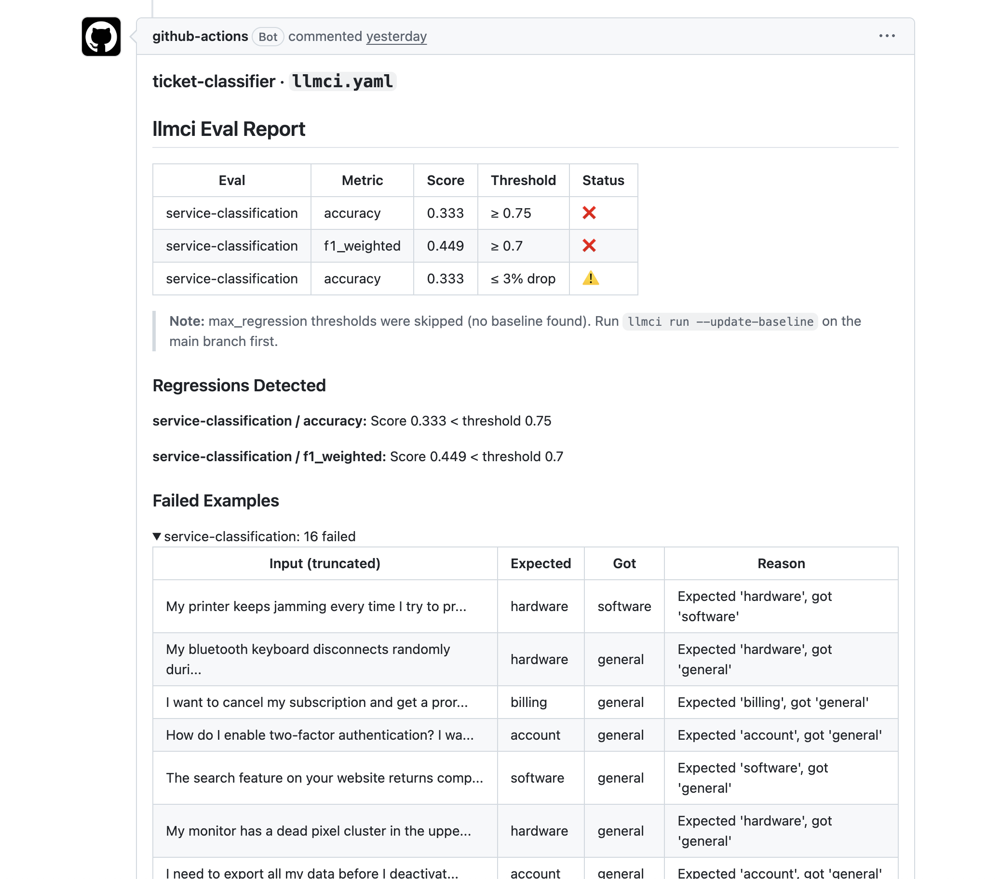

The prompt is innocent
The example lives in llmci-cli/llmci-testbed, a public repository with several small LLM-powered services. This one routes support tickets into hardware, billing, account, software, or general.
The first classifier post showed a prompt diff causing a regression. This one is more mundane: the prompt does not change at all. A nearby preprocessing rule changes the text that reaches the model, and the service starts misrouting tickets.
services/ticket-classifier/app/classifier.py
services/ticket-classifier/app/pipeline.py
services/ticket-classifier/app/prompts/classify.txt
services/ticket-classifier/evals/tickets.jsonl
services/ticket-classifier/llmci.yaml
services/ticket-classifier/scripts/eval_service.py
.github/workflows/llmci.ymlThe regression is one preprocessing rule
The ticket classifier already strips obvious PII before calling the model: phone numbers, email addresses, credit cards, and SSNs. A pull request adds a broad name-redaction rule.
@@ PII_PATTERNS
PII_PATTERNS = [
(r"\b\d{3}[-.]?\d{3}[-.]?\d{4}\b", "[PHONE]"),
(r"\b[A-Za-z0-9._%+-]+@[A-Za-z0-9.-]+\.[A-Z|a-z]{2,}\b", "[EMAIL]"),
(r"\b\d{4}[- ]?\d{4}[- ]?\d{4}[- ]?\d{4}\b", "[CARD]"),
(r"\b\d{3}-\d{2}-\d{4}\b", "[SSN]"),
+ (r"\b[A-Za-z]{4,}\b", "[NAME]"),
]
In review, this can look like a privacy hardening change. In behavior, it is catastrophic: every word of four or more letters becomes [NAME]. printer, charged, password, subscription, crashes, and webcam all disappear before the classifier sees the ticket.
The service path hides the damage
The application boundary is not just the prompt. A ticket goes through the service pipeline first: normalize text, redact PII, then call the classifier. That means a bad preprocessing rule can change model behavior without touching the prompt file.
def preprocess(text: str) -> str:
cleaned = text.strip()
cleaned = re.sub(r"\s+", " ", cleaned)
for pattern, replacement in PII_PATTERNS:
cleaned = re.sub(pattern, replacement, cleaned)
return cleaned
def classify(text: str) -> dict:
cleaned = preprocess(text)
category, confidence = classify_core(cleaned)
final_category = postprocess(category, confidence)
return {"category": final_category, "preprocessed_text": cleaned}The real-model path still goes through LiteLLM. The prompt template is unchanged; the input text is what changed.
prompt_template = PROMPT_PATH.read_text()
prompt = prompt_template.replace("{input}", text)
model = os.environ.get("CLASSIFIER_MODEL", "openai/gpt-4o-mini")
category = complete(prompt, model=model).strip().lower()
if category not in CATEGORY_KEYWORDS:
return "general", 0
return category, CONFIDENCE_THRESHOLDllmci does not need a custom integration for this service. It only needs the same command boundary the app already exposes for evals.
data = json.loads(Path(args.input).read_text())
category = classify(data["input"])["category"]
Path(args.output).write_text(json.dumps({
"output": category,
"usage": {"tokens_in": tokens_in, "tokens_out": tokens_out},
"cost": cost,
}))The eval is small on purpose
The dataset is not a giant benchmark. It is a focused set of normal support tickets that should keep working across service changes.
{"input": "My printer keeps jamming every time I try to print...",
"expected": "hardware"}
{"input": "I want to cancel my subscription and get a prorated refund...",
"expected": "billing"}
{"input": "I can't log into my account. I've tried resetting my password...",
"expected": "account"}
{"input": "The mobile app crashes immediately after the latest update...",
"expected": "software"}The over-broad redaction rule damages every category. Hardware words disappear, billing words disappear, account words disappear, and software words disappear. The model still returns a valid label; it is just often the wrong one.
The config turns it into a CI gate
The service-level llmci config ties the full pipeline wrapper and dataset together. Accuracy must stay at or above 0.75, weighted F1 must stay at or above 0.70, and accuracy must not regress by more than three percentage points when a baseline exists.
target:
command: "python3 scripts/eval_service.py --input {input_file} --output {output_file}"
evals:
- name: service-classification
level: pipeline
dataset: ./evals/tickets.jsonl
judge: exact_match
metrics:
- name: accuracy
threshold: 0.75
mode: absolute
- name: f1_weighted
threshold: 0.70
mode: absoluteFor a real-model run, CI only needs the same pieces the application already needs: provider credentials, a model name, and the normal pull request comparison.
- name: Run focused ticket classifier eval
working-directory: services/ticket-classifier
env:
OPENAI_API_KEY: ${{ secrets.OPENAI_API_KEY }}
CLASSIFIER_MODEL: openai/gpt-4o-mini
GITHUB_TOKEN: ${{ secrets.GITHUB_TOKEN }}
LLMCI_REPORT_SLICE: ticket-classifier/llmci.yaml
run: llmci run --config llmci.yaml --compare-to=origin/mainThe report explains the failure
When the preprocessing change runs through the gate, llmci reports both the aggregate drop and concrete tickets that changed. The public focused testbed PR applies this exact preprocessing regression and adds a dedicated workflow job for ticket-classifier / llmci.yaml.
Below the configured 0.75 quality floor.
Below the configured 0.70 threshold.
Failed examples attached to the review comment.

The failed examples make the regression obvious. Tickets across categories start falling through to general, and a few route to the wrong concrete category.
What review alone can miss
A reviewer can read the preprocessing diff and agree with the intent. PII redaction is good. But the effect on model behavior only becomes obvious when the service is exercised against examples that matter.
- It runs the service boundary. The target command includes preprocessing, classification, and output formatting.
- It reports product-level behavior. The failure is framed as service accuracy and weighted F1.
- It gives examples. Reviewers see which tickets changed and what they changed into.
- It fits CI. The result is a normal pass/fail check and a pull request comment.
The lesson is that LLM quality is a system property. Prompts matter, but so do preprocessors, serializers, routers, retrievers, schemas, fallback paths, and every other bit of code that shapes what the model sees.
Try it yourself
Open the testbed repository, inspect the ticket classifier service, and apply the preprocessing diff above on a branch. The smallest useful version of this pattern is:
- Commit representative examples in
evals/*.jsonl. - Add a target command that runs the application boundary users actually hit.
- Set one or two thresholds your team actually trusts.
- Run
llmci run --config llmci.yaml --compare-to=origin/mainon pull requests.